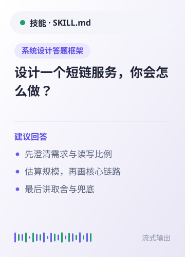
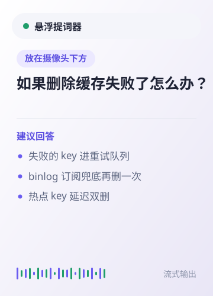
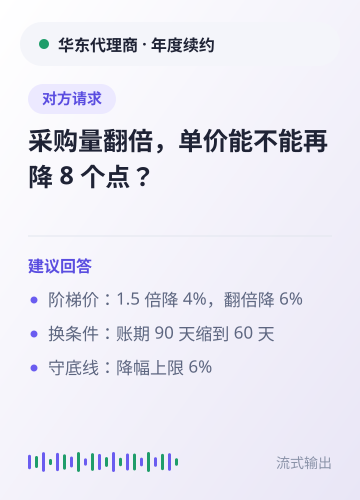
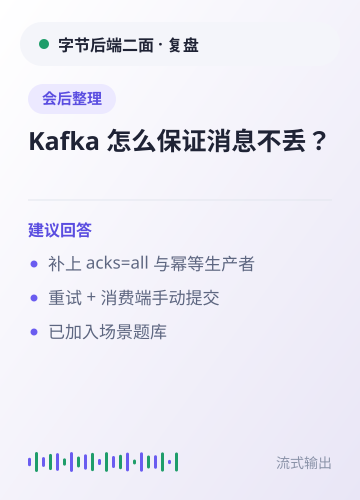
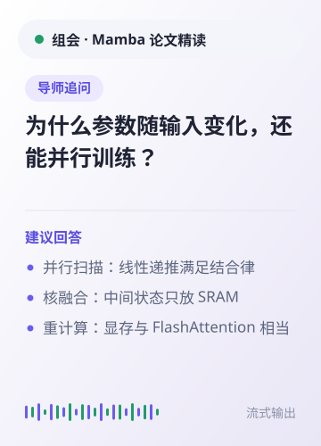
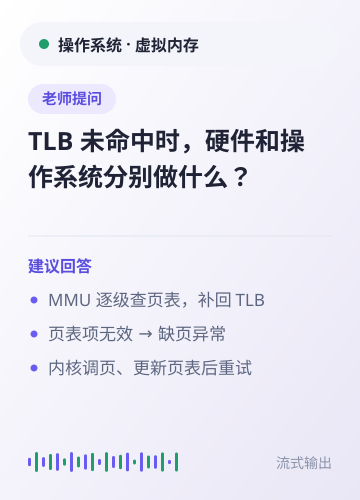
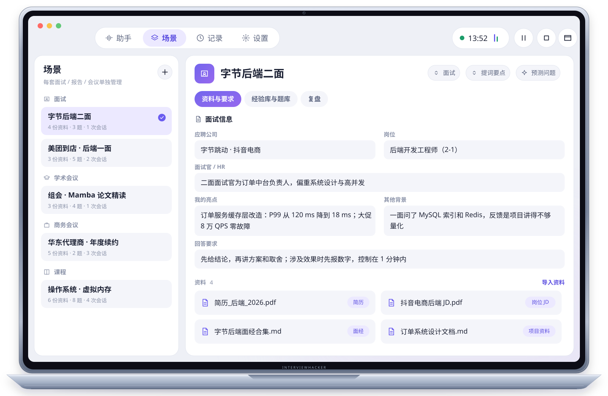
听见问题，及时准备回答
区分提问、请求与追问。对方补充后半句时，回答会跟着完整问题更新。
实时
识别到的问题会整理成清晰的回答提示，方便你先看重点，再用自己的方式表达。
回答带上当前场景
每场面试、报告或会议都有独立背景，切换场景即可带入对应的目标、资料与回答要求。
场景
回答只参考当前场景里相关的资料、经验和题库，减少临场翻找信息的时间。
用适合自己的方式查看
完整内容留在助手窗口，重点放进悬浮提词器。同一 Wi-Fi 下，也可以用手机伴侣查看当前问题与回答。
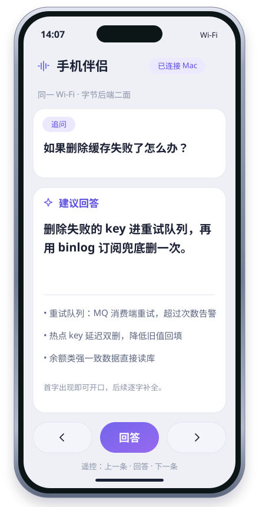
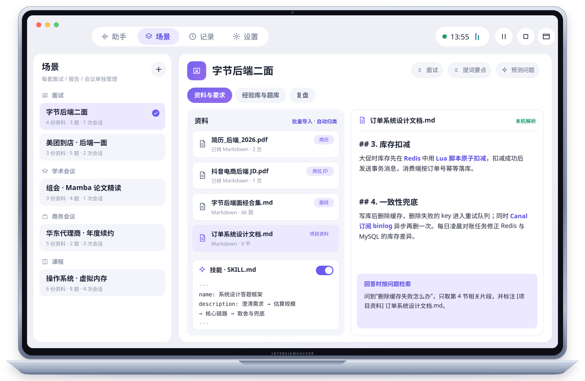
资料和技能，按需参与
资料和技能，按需参与
简历、岗位说明、论文或会议材料，都可以加入当前场景。资料在本机解析，回答时按问题取用相关内容。
资料
也可以导入自己的 SKILL.md，让回答按全局习惯或指定场景使用答题框架。
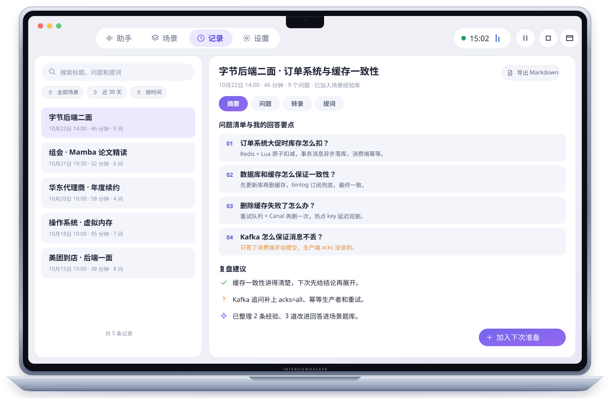
会后继续积累
会后继续积累
结束后可回看转录、问题、回答和摘要；复盘得到的经验与题目可以留给下一次使用。
复盘
会话记录与场景资料保存在本机；你可以在设置中关闭记录、导出备份或删除数据。
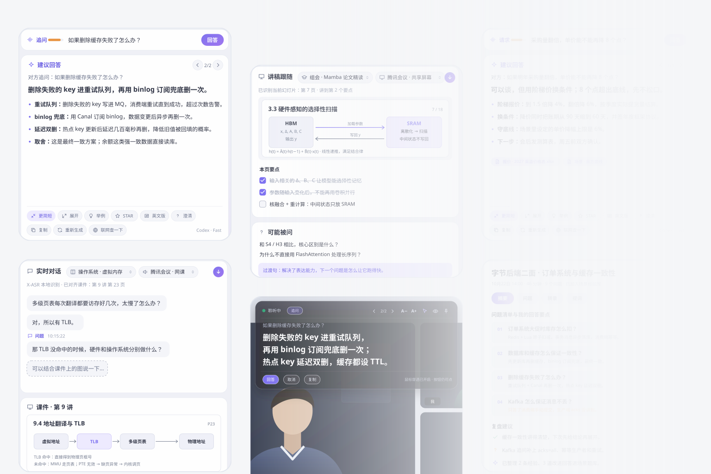
把注意力留给交流。
双路收音分别处理对方的系统声音和你的麦克风，让你更容易跟上问题与自己的表达。回答建议用于辅助准备，请结合实际情况判断和作答。
从准备到复盘，清楚走完每一步。
-
1
选择场景：为面试、报告、会议或课程建立专属上下文。
-
2
加入资料：导入相关文件，设置目标、回答要求与可选技能。
-
3
开始辅助：选择音频来源，实时查看转录、问题判断和流式回答。
-
4
会后复盘：回看问题、回答与摘要，把经验留给下一次。
为重要对话准备的工具。
双路实时识别
系统声音与麦克风分开识别，并尝试排除扬声器回声。
回答贴合场景
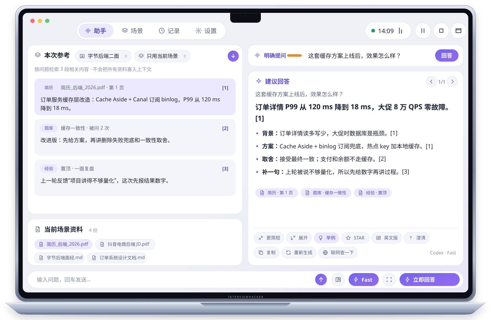
问题、相关资料、经验和题库可结合当前场景提供上下文。
查看方式灵活
支持助手窗口、提词器和手机伴侣；可选择回答引擎与语音识别方式。
复盘形成积累
可保存转录、问题、回答和摘要，并把复盘结果整理为经验与题目。
InterviewHacker 使用场景
求职面试
字节后端二面
带入简历、岗位 JD 和面经。面试官从订单系统追问到缓存一致性，回答直接引用你项目里的方案与数字。
字节后端二面
面试官从订单系统追问到缓存一致性，回答直接引用你项目里的方案与数字。
组会 · Mamba 论文精读
讲稿跟随当前幻灯片；导师追问时给出引用论文页码的解释。
华东代理商 · 年度续约
对方要求再降 8 个点时，按底线给出阶梯报价，并实时记下决定与待办。
操作系统 · 虚拟内存
老师提问 TLB 未命中时，答案对齐到课件第 9 讲第 23 页。
让准备、表达与复盘连在一起。
场景化上下文
为不同面试、报告和会议分别维护背景与回答要求。
按需选择服务
可选本机离线识别、系统语音或云端识别，并连接你配置的回答引擎。
本机保存资料
资料在本机解析，场景和会话数据保存在本机目录。
持续复用经验
把复盘整理成经验库和题库，在后续对话中按需参考。
数据去向，由你决定。
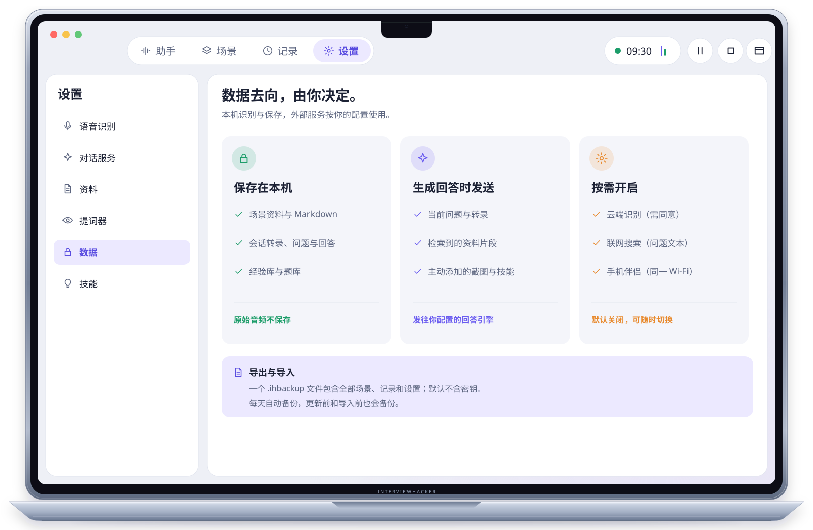
默认使用本机离线语音识别，原始音频不会保存。若选择云端识别并同意，音频会发送给所选服务。生成回答时，转录、问题、相关资料片段、截图与启用的技能会发送到你配置的回答引擎；场景资料和会话记录保存在本机。
联网搜索开启后，问题文本会发送至所选搜索服务。手机伴侣默认关闭；启用后仅同步当前问题与回答，通过本地网络以明文 HTTP 传输，请只在可信 Wi-Fi 下使用。
查看完整数据去向 ↗当前应用版本 v1.8.0；下载需要仓库访问权。
开始使用需要语音识别 + 对话服务。回答会使用当前问题检索到的资料片段，不会把所有资料塞入上下文。